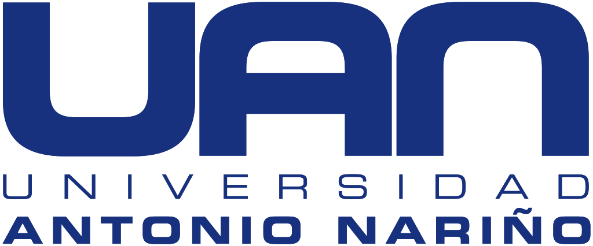

Curriculum
Experiencia
Grupo nutresa
2024
- Operaciones de sistemas T.I
- Supervicion y mantenimiento de la infraestructura tecnologica
- Solucion de problemas en software corporativo
- Gestión de la seguridad informatica
- Mantenimiento de computo
- manejo de herramientas ofimaticas
Teleperformance
2024
- Asesor Back ofice
- Transpaso y digitacion de documentacion empresarial
- Gestión de la documentación de manera organizada y precisa
- Manejo de plataforma corporativa y gestion de informacion administrativa externa
Avant Assurance S.A.S
2023
- Asesoramiento permanente a los clientes con un enfoque en la satisfacción del cliente.
- Realización de seguimiento posventa para garantizar la calidad del servicio.
- Gestión de la documentación de manera organizada y precisa
- Comunicación efectiva con los clientes para comprender sus necesidades y recomendar soluciones adecuadas.
Formacion Academica
Universidad Antonio Nariño
Actualmente cursando
- 
- Tecnologia en construcción de software
Alura LATAM
Actualmente cursando

- Desarrollador Front-End